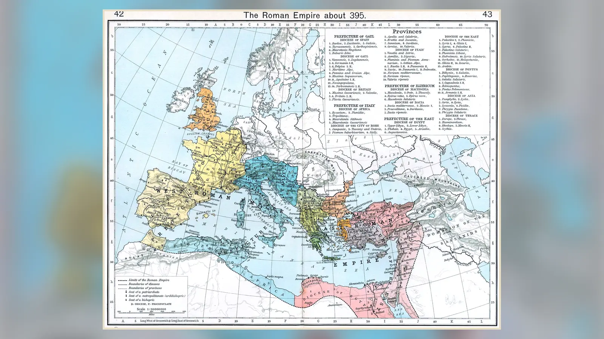
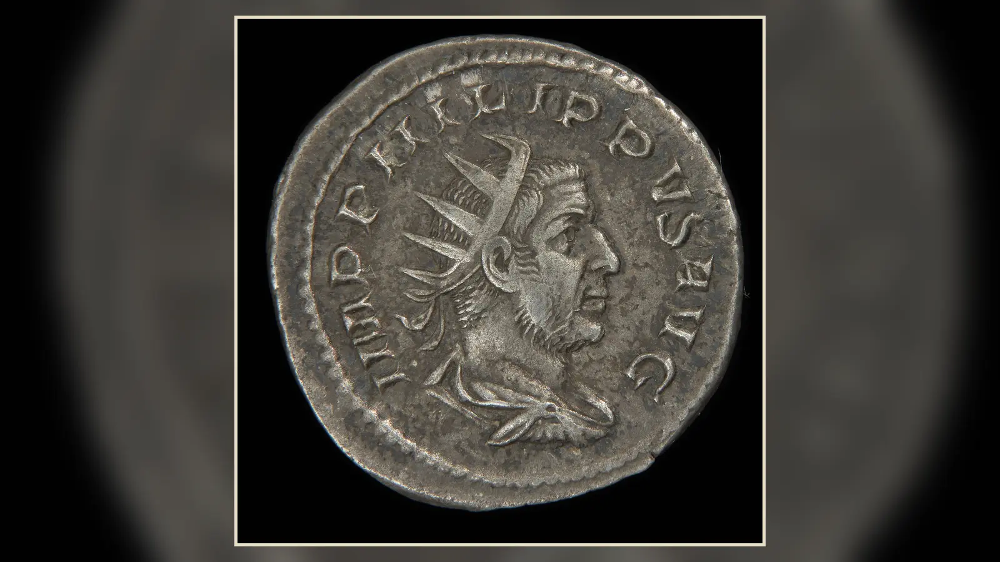
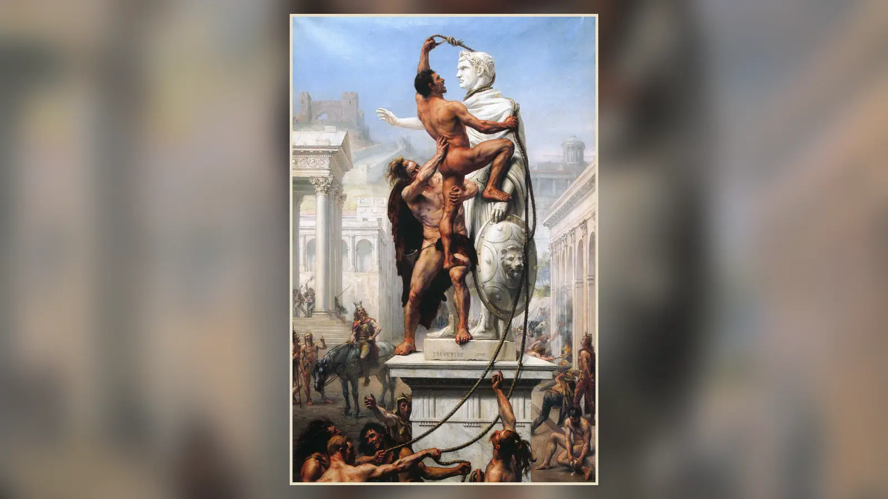
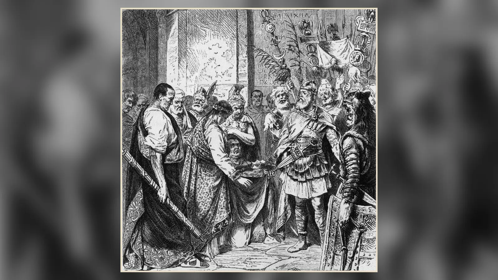

MS 476’da Ravenna’da alışılmadık bir iktidar değişimi yaşandı. Batı’nın genç imparatoru Romulus Augustulus, İtalya’daki askerî birliklerin başına geçen Odoacer tarafından tahttan indirildi. Romulus öldürülmedi; kaynakların aktardığına göre gençliği nedeniyle bağışlandı ve Campania’ya gönderildi. Batı imparatorluk makamının alametleri ise Konstantinopolis’e yollandı. Sonraki kuşaklar bu olayı “Roma İmparatorluğu’nun yıkılışı” olarak hatırlayacaktı. Fakat 476’da Roma dünyası bir gecede ortadan kalkmadı. Konstantinopolis merkezli Doğu Roma İmparatorluğu yaşamaya devam etti ve 1453’e kadar varlığını sürdürdü. Hatta 476’da tahttan indirilen Romulus, Doğu sarayının tanıdığı meşru Batı imparatoru bile değildi; Julius Nepos Dalmaçya’da 480’e kadar imparatorluk unvanını korudu.
Bu nedenle “Roma İmparatorluğu neden yıkıldı?” sorusu aslında daha dikkatli kurulmalıdır: Batı Roma’daki merkezi imparatorluk yönetimi beşinci yüzyılda neden çöktü? Yüzyıllar boyunca Akdeniz dünyasının büyük bölümünü yöneten, profesyonel ordular besleyen, vergi toplayan, yollar ve limanlarla kıtaları birbirine bağlayan, hukuk ve bürokrasi üreten bir devlet nasıl oldu da İtalya’daki kendi ordusunu bile eskisi gibi denetleyemez hâle geldi? Cevap, “barbarlar geldi ve Roma’yı yıktı” kadar basit değildir. Dış saldırılar ve göçler çok önemliydi; fakat bunların etkisi iç savaşlar, vergi tabanının daralması, askerî finansman sorunları ve eyaletlerin kaybıyla birleştiğinde yıkıcı hâle geldi.
Batı Roma’nın sonunu açıklayan en güçlü yaklaşım, tek bir “ölüm nedeni” aramak yerine devlet kapasitesinin nasıl aşındığını izlemektir. İmparatorluk üçüncü yüzyıldaki ağır krizden çıkmayı başarmıştı; dördüncü yüzyılda hâlâ son derece güçlüydü. Beşinci yüzyılda ise krizlerin sıklığı ve birbirini besleme biçimi değişti. Toprak kaybı vergi gelirini azaltıyor, azalan gelir orduyu finanse etmeyi zorlaştırıyor, askerî zayıflık yeni toprak kayıplarını kolaylaştırıyor, saray ve generaller arasındaki mücadeleler eldeki kuvvetleri dış düşmanlar yerine iç savaşlarda tüketiyordu. Batı Roma tek bir darbeyle devrilmedi; art arda gelen darbelerden sonra eskisi gibi toparlanma yeteneğini kaybetti.
Roma İmparatorluğu Gerçekten Ne Zaman Yıkıldı?
Roma’nın “yıkılış tarihi” sorusu, önce hangi Roma’dan söz ettiğimizi belirlemeyi gerektirir. Roma Cumhuriyeti, Augustus’un MÖ 27’de kurduğu principatus düzeniyle tek kişinin belirleyici olduğu imparatorluk sistemine dönüşmüş; sonraki yüzyıllarda devlet biçimi önemli ölçüde değişmişti. İmparatorluğun doğu ve batı bölgeleri zaman zaman farklı hükümdarlar tarafından yönetildi. Bu nedenle 395’te I. Theodosius’un ölümünün ardından oğulları Arcadius’un Doğu’yu, Honorius’un Batı’yı yönetmesi bir anda iki tamamen bağımsız devletin doğduğu anlamına gelmez. Yine de 395, iki sarayın ve iki yönetim merkezinin giderek kalıcılaşması nedeniyle kullanışlı bir dönüm noktasıdır.
Batı’daki imparatorluk makamının sonu için geleneksel tarih 476’dır. Odoacer’ın askerleri Orestes’e karşı ayaklandı; Orestes öldürüldü ve oğlu Romulus Augustulus 4 Eylül 476’da tahttan indirildi. İmparatorluk alametlerinin Konstantinopolis’e gönderilmesi, İtalya’da ayrı bir Batı imparatoruna ihtiyaç olmadığı düşüncesini sembolize ediyordu. Fakat bu olayın çağdaşlar tarafından modern ders kitaplarındaki kadar kesin bir “çağ sonu” olarak algılandığını düşünmemek gerekir. Odoacer, Roma idari geleneklerini tümüyle tasfiye etmedi ve Doğu imparatoru Zeno’dan meşruiyet aradı.
Dahası, Julius Nepos sorunu 476’yı mutlak bir sınır olmaktan çıkarır. Nepos 474’te Batı imparatoru olmuş, Orestes’in isyanıyla 475’te Dalmaçya’ya kaçmıştı. Doğu sarayı Romulus Augustulus’u meşru imparator olarak tanımadı; Nepos 480’de öldürülene kadar unvanını korudu. Odoacer’ın bir süre Nepos adına sikke bastırması da bu karmaşık meşruiyet ilişkisini gösterir. Bu nedenle 476, Batı’da yeni bir imparator atanmadığı için son derece anlamlıdır; fakat “Roma’nın tamamen bittiği gün” değildir.
İtalya’daki senato, aristokrat aileler, yerel idareler, hukuk uygulamaları ve Roma kimliği 476’dan sonra da yaşamaya devam etti. Batı eyaletlerinde ortaya çıkan krallıklar da Roma dünyasından tamamen kopmuş yapılar değildi; yöneticileri Roma unvanlarını, hukuk geleneklerini, vergi ve idare pratiklerini farklı ölçülerde kullandılar. Bu yüzden modern tarihçilikte “çöküş” ile “dönüşüm” arasındaki tartışma önemlidir. Siyasal merkezî otorite gerçekten çöktü; fakat Roma toplumunun bütün unsurları aynı tarihte ortadan kalkmadı.

Roma’nın Altın Çağından Kriz Dönemine
Augustus’tan Marcus Aurelius’un ölümüne kadar uzanan ve kabaca Pax Romana adıyla anılan dönemde imparatorluk Britanya’dan Mısır’a, İspanya’dan Suriye’ye kadar geniş bir alanı kontrol ediyordu. Roma’nın gücü yalnızca lejyonlarından gelmiyordu. Şehirler yerel yönetim ve vergi toplama ağının düğümleriydi; yollar orduların ve haberlerin hareketini kolaylaştırıyor, limanlar ve deniz ticareti Akdeniz’in farklı bölgelerini birbirine bağlıyor, imparatorluk vergi sistemi askerî makineyi besliyordu. İmparatorluk, yerel elitleri yönetime dahil ederek çok büyük bir coğrafyayı görece sınırlı merkezî kadrolarla idare edebiliyordu.
Bu düzen kusursuz değildi. Salgınlar, isyanlar, hanedan krizleri ve sınır savaşları erken imparatorluk döneminde de yaşandı. Ancak devlet çoğu zaman kayıpları telafi edebilecek mali ve askerî kapasiteye sahipti. Bir sınır ordusu yenildiğinde başka birlikler sevk edilebiliyor, imparator öldüğünde sistem çoğu kez yeni bir hükümdar üretebiliyor, zengin eyaletlerden gelen gelirler geniş askerî yapıyı sürdürebiliyordu. İmparatorluğun büyüklüğü ciddi lojistik sorunlar yaratıyordu ama bu büyüklüğün kendi başına ölümcül olmadığı, Roma’nın aynı coğrafyayı yüzyıllarca yönetebilmesinden anlaşılır.
“Aşırı genişleme Roma’yı kaçınılmaz olarak yıktı” açıklaması bu nedenle eksiktir. Genişlik hem maliyet hem kaynak demekti. Mısır ve Kuzey Afrika gibi üretken bölgeler, Anadolu ve Suriye’nin zengin şehirleri, Galya ve İspanya’nın vergi kaynakları devlete büyük gelir sağlıyordu. Asıl sorun, merkezî yönetimin bu kaynakları toplama ve askerî güce dönüştürme kapasitesi bozulduğunda ortaya çıktı. Roma’nın büyüklüğü, iyi işleyen bir sistemde güç kaynağı; iç savaş ve toprak kaybı dönemlerinde ise savunulması pahalı bir yük hâline gelebiliyordu.
Üçüncü Yüzyıl Krizi Roma’yı Nasıl Sarstı?
MS 235–284 arasındaki dönem, imparatorluğun ne kadar ağır bir kriz yaşayabileceğini ve yine de toparlanabileceğini gösterir. Severus Alexander’ın 235’te öldürülmesinden sonra orduların desteklediği komutanlar art arda imparator ilan edildi. Bazıları yalnızca birkaç ay hüküm sürdü. Taht üzerindeki rekabet, imparatorların sınır savunmasından çok rakiplerini yenmeye odaklanmasına yol açtı. Aynı dönemde Sasani İmparatorluğu doğuda güçlü bir rakip hâline geldi; Ren ve Tuna sınırlarında baskılar arttı. 260’ta İmparator Valerianus’un Sasani kralı I. Şapur’a esir düşmesi Roma prestiji açısından olağanüstü bir darbeydi.
Merkezî otorite öylesine zayıfladı ki imparatorluğun bazı bölgeleri fiilen ayrı siyasi yapılara dönüştü. Batıda Galya İmparatorluğu, doğuda Palmira merkezli güç alanı ortaya çıktı. Para sisteminde ciddi bozulmalar yaşandı; özellikle antoninianus gibi sikkelerin değerli metal içeriğinin azaltılması fiyatlar ve güven üzerinde ağır baskı yarattı. Salgın hastalıklar, savaşların üretim ve ticarete verdiği zarar ve askerî harcamalar krizi derinleştirdi. Yine de üçüncü yüzyılın sonunda Aurelianus gibi imparatorlar parçalanmış bölgeleri yeniden birleştirdi.

Diocletianus 284’ten itibaren imparatorluk yönetimini yeniden yapılandırdı. Tetrarşiyle iktidarın farklı imparatorlar arasında paylaşılması, sınır krizlerine daha hızlı cevap verebilecek bir düzen yaratmayı amaçlıyordu. Eyalet sayısı artırıldı, bürokrasi genişletildi, vergi sistemi daha düzenli hâle getirilmeye çalışıldı ve ordu yeniden örgütlendi. Reformlar Roma’yı “yıkmadı”; aksine üçüncü yüzyıl krizinden çıkışın temel araçlarıydı. Bununla birlikte daha büyük ordu ve bürokrasi daha fazla gelir gerektiriyor, devletin toplum üzerindeki mali taleplerini artırıyordu.
Üçüncü yüzyıl krizinin Batı Roma’nın 476’daki sonunu doğrudan açıklamadığını özellikle vurgulamak gerekir. Arada yaklaşık iki yüzyıl vardır ve dördüncü yüzyıl imparatorluğu birçok bakımdan yeniden güçlüdür. Krizin önemi başka yerdedir: veraset sorununun, iç savaşların ve askerî komutanların siyasal güç üretmesinin Roma sistemi içinde ne kadar tehlikeli olabileceğini göstermiştir. Beşinci yüzyılda benzer mekanizmalar yeniden işlediğinde Batı artık aynı kaynaklarla toparlanamayacaktı.
Taht Kavgaları ve İç Savaşlar Roma’yı Nasıl Zayıflattı?
Roma imparatorluk sisteminin en kalıcı yapısal sorunlarından biri, iktidarın nasıl devredileceğini tartışmasız biçimde belirleyen bir anayasal mekanizmanın bulunmamasıydı. Hanedan bağı, evlat edinme, saray desteği, senato onayı ve özellikle ordunun kabulü farklı dönemlerde farklı ağırlıklar taşıdı. Güçlü bir imparatorun ölümü, aynı anda birkaç meşruiyet iddiasının ortaya çıkmasına yol açabiliyordu. Bir general yeterli askerî desteği topladığında imparatorluk iddiasında bulunması mümkündü.
İç savaşın maliyeti yalnızca savaş meydanındaki kayıplardan ibaret değildi. Bir imparator rakibine karşı savaşmak için Ren veya Tuna’daki birlikleri çektiğinde sınır savunması zayıflıyordu. Askerlerin maaşı, donanımı ve lojistiği için büyük kaynak harcanıyor; galip taraf çoğu zaman ordusunu ödüllendirmek zorunda kalıyordu. Üstelik savaşta ölen deneyimli askerlerin yerini doldurmak kolay değildi. Devletin dış tehditlere karşı kullanması gereken insan ve para, Roma ordularının birbirini yok ettiği mücadelelerde tüketiliyordu.
Adrian Goldsworthy, Roma’nın çöküşünü açıklarken özellikle bu iç siyasi rekabete ağırlık verir. Onun yaklaşımında imparatorların ve üst düzey komutanların kısa vadeli hayatta kalma kaygısı, devletin uzun vadeli çıkarlarının önüne geçebiliyordu. Bu yorum “kötü imparatorlar Roma’yı yıktı” demek değildir. Sorun, tek tek kişilerin karakterinden daha derindir: imparatorluk makamının kontrolü için askerî güç kullanmanın sistem içinde sürekli mümkün olmasıdır.
Beşinci yüzyıl Batı’sında bu sorun daha tehlikeli hâle geldi. İmparatorların yanında Stilicho, Aetius ve Ricimer gibi güçlü askerî figürler belirleyici oldu; saray darbeleri ve rakip hizipler merkezi siyaseti parçaladı. 454’te III. Valentinianus’un Aetius’u öldürmesi, ertesi yıl imparatorun kendisinin öldürülmesi ve ardından gelen hızlı iktidar değişimleri, devletin zaten daralmış kaynaklarını istikrarlı bir strateji etrafında toplamasını zorlaştırdı.
Roma Ekonomisi Neden Zayıfladı?
Roma ekonomisinin “bir gün çöktüğünü” söylemek mümkün değildir. İmparatorluğun bölgeleri aynı anda ve aynı ölçüde gerilemedi; arkeolojik bulgular bazı geç antik bölgelerde canlı üretim ve ticaretin sürdüğünü gösterir. Üçüncü yüzyıldaki para krizini de doğrudan beşinci yüzyılın bütün ekonomik sorunlarının açıklaması yapmak yanlıştır. Diocletianus ve Konstantin dönemlerinde para ve vergi sisteminde önemli düzenlemeler yapılmış, altın solidus uzun süre güvenilir bir para birimi olarak kullanılmıştır.
Batı Roma için asıl kritik mesele devlet maliyesiydi. Geç Roma devleti profesyonel askerî kuvvetleri, sarayı, bürokrasiyi ve lojistik ağı sürdürebilmek için düzenli vergi toplamak zorundaydı. Toprak kaybı bu nedenle yalnızca haritada renk değiştirmesi anlamına gelmiyordu. Bir eyalet merkezî yönetimin kontrolünden çıktığında, oradaki vergi mükellefleri ve üretim fazlası da devlet bütçesinden uzaklaşıyordu. Gelir azalınca orduyu beslemek ve yeni birlikler kurmak zorlaşıyor; zayıflayan askerî kapasite başka bölgelerin kaybını kolaylaştırıyordu.
Bu kısır döngü beşinci yüzyılda Batı’nın en büyük sorunlarından biri hâline geldi. Britanya’dan çekilme, Galya ve İspanya’daki kontrol kayıpları ve özellikle Kuzey Afrika’nın Vandalların eline geçmesi, Batı sarayının gelir tabanını daralttı. Buna rağmen tehditler azalmadı. Devlet daha küçük bir mali tabanla benzer büyüklükte güvenlik sorunlarına cevap vermek zorundaydı.
Ağır vergilerin toplumsal etkisi de tartışmalıdır. Kaynaklar vergi yükünden kaçınma, yerel elitlerin sorumluluklardan uzaklaşması ve küçük üreticilerin güçlü toprak sahiplerinin himayesine girmesi gibi sorunlara işaret eder. Fakat bütün Batı toplumunu tek tip bir “ekonomik çöküş” modeliyle açıklamak doğru değildir. Köleliğin Roma’nın sonunu hazırladığı veya ticaretin 476’dan çok önce tamamen durduğu gibi popüler genellemeler de kanıtların bölgesel çeşitliliğini göz ardı eder. Belirleyici olan, ekonominin tamamının yok olması değil, Batı devletinin mevcut ekonomik kaynaklardan yeterli ve güvenilir vergi geliri çıkarma kapasitesinin giderek daralmasıydı.
Roma Ordusu Neden Eski Gücünü Kaybetti?
Geç Roma ordusunu erken imparatorluk lejyonlarının “bozulmuş” bir kopyası gibi görmek yanıltıcıdır. Üçüncü ve dördüncü yüzyıllarda ordu değişen tehditlere göre yeniden örgütlendi. Sınır bölgelerinde konuşlanan birliklerin yanında, imparatorların veya yüksek komutanların yönetiminde daha hareketli saha orduları önem kazandı. Bu düzen, farklı bölgelerde ortaya çıkan krizlere kuvvet aktarabilme avantajı sağlıyordu. Dolayısıyla askerî dönüşümün kendisi bir çöküş belirtisi değildi.
Sorun, bu sistemi finanse etmek ve insan gücü sağlamak giderek zorlaştığında ortaya çıktı. İç savaşlar deneyimli askerleri tüketiyor, toprak kayıpları vergi gelirini azaltıyor ve imparatorluk bazı bölgelerde kendi vatandaşlarından yeterli asker toplamakta zorlanıyordu. Devlet bu şartlarda farklı kökenlerden askerleri, müttefik grupları ve federati olarak anılan toplulukları kullanmaya devam etti. Germen kökenli askerlerin varlığı yeni değildi; Roma ordusu yüzyıllar boyunca imparatorluğun çok farklı halklarından asker toplamıştı.
“Roma ordusu tamamen barbar paralı askerlerden oluştu ve bu yüzden çöktü” iddiası bu nedenle doğru değildir. Beşinci yüzyılda yabancı kökenli askerî grupların ve liderlerin siyasal ağırlığı gerçekten arttı; ancak mesele etnik kökenden çok kurumsal denetimdi. Devlet düzenli maaş, ikmal ve kariyer sistemi sağlayabildiğinde farklı kökenlerden askerleri Roma ordusuna başarıyla entegre edebiliyordu. Mali ve siyasi merkez zayıfladığında ise birliklerin sadakati imparatorluk kurumundan çok kendi komutanlarına veya topluluk liderlerine bağlanabiliyordu.
Batı’nın askerî sorunu bu nedenle ekonomi ve siyasetle ayrılmaz biçimde bağlantılıydı. Ordu zayıfladığı için vergi bölgeleri kaybedildi; vergi bölgeleri kaybedildiği için ordu daha da zayıfladı. Generaller güçlü olduğu için saray istikrarsızlaştı; saray istikrarsızlaştıkça generallere daha fazla ihtiyaç duyuldu. Roma’nın son yüzyılını anlamak için ordunun “kalitesini” tek başına ölçmekten çok bu karşılıklı bağımlılıkları görmek gerekir.
Kavimler Göçü Roma’yı Nasıl Etkiledi?
Türkçe tarih anlatısında “Kavimler Göçü” adı verilen süreç, tek bir tarihte başlayan ve bütün halkların batıya doğru aynı anda yürüdüğü bir olay değildi. Modern araştırmalar, dördüncü ve beşinci yüzyıllarda farklı toplulukların göç, savaş, sığınma, askerlik, yerleşme ve yeni siyasi birlikler kurma süreçlerini birbirinden ayırmaya çalışır. “Gotlar”, “Vandallar” veya “Franklar” gibi adlar da yüzyıllar boyunca hiç değişmeyen biyolojik toplulukları ifade etmez; siyasal kimlikler savaşlar ve ittifaklarla dönüşebiliyordu.
Hunların dördüncü yüzyılın sonlarında Karadeniz’in kuzeyindeki bozkırlara ilerlemesi önemli bir zincirleme etki yarattı. Hun baskısıyla karşılaşan Got gruplarından bazıları 376’da Roma’nın Tuna sınırına geldi ve imparatorluk topraklarına kabul edilmek istedi. Bu insanların tamamını “Roma’yı işgal etmeye gelen barbar ordusu” olarak düşünmek yanlış olur. Roma yönetimi onları potansiyel yerleşimci ve asker kaynağı olarak değerlendirdi. Kriz, kabul sürecinin kötü yönetilmesiyle askerî çatışmaya dönüştü.
Beşinci yüzyılda Ren sınırının aşılması, Gotların Galya ve İspanya’ya hareketi, Vandalların İspanya üzerinden Kuzey Afrika’ya geçmesi ve Hun İmparatorluğu’nun yükselişi Batı Roma’nın askerî yükünü olağanüstü artırdı. Fakat Roma bu gruplarla yalnızca savaşmadı. Antlaşmalar yaptı, onları federati olarak kullandı, topraklarına yerleştirdi ve kimi zaman bir grubu diğerine karşı devreye soktu. Roma ile sınır ötesi topluluklar arasındaki çizgi, “uygarlık ve barbarlık” şeklinde keskin bir sınır değildi.
Tarihçiler bu göçlerin neden-sonuç ilişkisi konusunda farklı ağırlıklar verir. Peter Heather dışarıdan gelen büyük askerî baskının Batı’nın çöküşünde temel rol oynadığını vurgularken Guy Halsall, Roma içindeki siyasal dönüşümlerin yeni “barbar” güçlerin oluşumunu da şekillendirdiğini savunur. Walter Goffart ise göç ve yerleşim süreçlerinin eski “Germen dalgaları Roma’yı ezdi” anlatısından çok daha karmaşık olduğunu öne çıkarır. Ortak nokta, beşinci yüzyıl hareketliliğinin gerçek ve önemli olmasıdır; tartışma bunun Roma’nın iç sorunlarıyla nasıl ilişkilendirileceği üzerindedir.
Hadrianopolis Savaşı Neden Bir Dönüm Noktasıydı?
376’da Tuna’yı geçen Gotların yerleştirilmesi Roma için yönetilebilir bir süreç olabilirdi. İmparator Valens onların imparatorluk topraklarına girmesine izin verdi; amaç hem sınırın ötesindeki Hun baskısından kaçan insanları kontrol altına almak hem de imparatorluk için yeni asker ve üretici nüfus kazanmaktı. Fakat Roma görevlilerinin yolsuzluğu, yiyecek sıkıntısı ve sığınmacıların sömürülmesi kısa sürede büyük bir krize dönüştü. Açlık ve kötü muamele isyanı besledi.
9 Ağustos 378’de Hadrianopolis yakınlarında Valens’in ordusu Got kuvvetleriyle karşılaştı. İmparator, Batı’dan gelen takviyeleri tam olarak beklemeden savaşa girdi ve Roma ordusu ağır yenilgiye uğradı. Valens savaşta öldü. Yenilgi, Roma ordusunun “bir daha asla toparlanamadığı” an değildi; I. Theodosius döneminde askerî düzen yeniden kuruldu ve imparatorluk sonraki on yıllarda büyük ordular çıkarmayı sürdürdü. Buna rağmen bir Roma imparatorunun savaş alanında ölmesi ve büyük bir saha ordusunun kaybı son derece ciddi bir şoktu.
Hadrianopolis’in asıl önemi, göç yönetimi, yerleşim politikası ve askerî entegrasyon sorunlarının ne kadar tehlikeli biçimde birleşebileceğini göstermesidir. Roma’nın sınırı geçen grupları sisteme dâhil etme kapasitesi uzun süredir imparatorluğun gücünün parçasıydı. 376–378 krizi, kötü yönetildiğinde aynı mekanizmanın içeride büyük bir askerî tehdide dönüşebileceğini gösterdi. Bu nedenle savaş, “Roma’yı yıkan tek savaş” değil, sonraki yüzyılın temel sorunlarından bazılarını erken biçimde görünür kılan bir dönüm noktasıdır.
Roma’nın Yağmalanması: 410 ve 455
410’da Alaric liderliğindeki Vizigotların Roma’ya girmesi, askerî sonuçlarından daha büyük bir psikolojik etki yarattı. Roma artık Batı imparatorlarının sürekli ikamet ettiği yönetim merkezi değildi; saray önce Milano’ya, ardından daha güvenli Ravenna’ya kaymıştı. Buna rağmen şehir yüzyıllardır imparatorluğun sembolik merkeziydi. Yaklaşık sekiz yüzyıl boyunca yabancı bir düşman tarafından yağmalanmamış olması, 410 olayını çağdaşlar için sarsıcı kıldı.
Alaric’in Roma’yla ilişkisi basit bir “dışarıdan gelen fatih” hikâyesi değildir. Got kuvvetleri yıllardır imparatorluk siyaseti içinde yer alıyor, askerî makamlar ve yerleşim koşulları için pazarlık yapıyordu. Saray içindeki güç mücadeleleri, özellikle Stilicho’nun 408’de idamından sonra yaşanan kırılmalar, çatışmanın tırmanmasında etkili oldu. 410 yağması bu nedenle Batı’nın zayıflamasının hem sonucu hem de onu daha da derinleştiren bir olaydı.
455’te Roma bu kez Geiseric liderliğindeki Vandallar tarafından yağmalandı. Modern “vandalizm” kelimesinin yarattığı çağrışım, Vandalları amaçsızca her şeyi yok eden bir topluluk gibi göstermeye eğilimlidir. Antik kaynakların ve modern çalışmaların ortaya koyduğu tablo daha karmaşıktır. Yağma gerçekti ve önemli miktarda servet götürüldü; fakat olayın amacı şehri anlamsız biçimde yok etmek değildi. Vandallar artık Kuzey Afrika merkezli güçlü bir Akdeniz devletiydi ve Roma siyasetiyle hanedan ilişkileri, savaş ve diplomasi üzerinden bağlantılıydılar.
410 ve 455 yağmaları Roma’nın çöküşünün tek nedeni değildi. Daha doğru ifadeyle, devlet otoritesinin zayıflaması bu saldırıları mümkün kıldı; saldırılar da prestij, servet ve siyasal güven bakımından zayıflığı artırdı. Özellikle 455 sonrasında Batı sarayındaki hızlı imparator değişimleri, merkezî iktidarın toparlanmasını daha da zorlaştırdı.

Kuzey Afrika’nın Kaybı Batı Roma İçin Neden Felaketti?
Batı Roma’nın beşinci yüzyıldaki en ağır stratejik kayıplarından biri İtalya’da değil Kuzey Afrika’da yaşandı. Vandallar 429’da İspanya’dan Afrika’ya geçti ve yıllar süren mücadelelerin ardından 439’da Kartaca’yı ele geçirdi. Bu olay, Batı’nın yalnızca önemli bir şehrini kaybetmesi değildi. Roma Afrikası üretken tarım arazileri, zengin kentleri, Akdeniz ticaret bağlantıları ve vergi gelirleriyle Batı devletinin en değerli bölgelerinden biriydi.
Kuzey Afrika’nın Roma ve İtalya için tahıl ve başka ürünler sağlaması iyi bilinir; fakat devlet açısından daha kritik mesele vergiydi. Beşinci yüzyıl Batı yönetimi ordusunu para ve ayni vergilerle besliyordu. Afrika’nın önemli bölümünün kaybı, zaten Galya ve İspanya’da baskı altında olan mali tabanı daha da küçülttü. Bu, “daha az toprak” sorunundan çok daha ciddi bir sonuç doğurdu: Batı’nın kaybettiği eyaletleri geri almak için ihtiyaç duyduğu orduları finanse etme kapasitesi de kaybedilen eyaletlerle birlikte azalıyordu.
Vandal donanmasının Akdeniz’de etkinleşmesi Sicilya ve İtalya üzerinde de baskı yarattı. Batı yönetimi Afrika’yı geri almak için girişimlerde bulundu; Majorianus’un 460’taki hazırlıkları başarısız oldu. 468’de Doğu ve Batı hükümetleri Geiseric’e karşı antik dünyanın en büyük deniz harekâtlarından birini düzenledi. Seferin antik kaynaklarda verilen maliyet rakamları birbirinden farklıdır ve kesin rakamlar ihtiyatla kullanılmalıdır; fakat operasyonun olağanüstü pahalı olduğu konusunda kuşku yoktur. Basiliscus komutasındaki ana filonun Cape Bon yakınlarında uğradığı felaket, Afrika’yı geri alma umuduna ağır darbe vurdu.
439 ve 468 tarihleri birlikte düşünüldüğünde Batı Roma’nın mali-askerî kısır döngüsü çok açık görülür. Zengin bir vergi bölgesi kaybedildi; onu geri almak için devasa kaynak harcandı; sefer başarısız olunca hem bölge geri alınamadı hem de mevcut kaynaklar tükendi. Batı’nın sonraki yıllarda güçlü ve sürekli bir toparlanma harekâtı düzenleyememesinde bu başarısızlığın önemli payı vardı.
Doğu Roma Ayakta Kalırken Batı Roma Neden Çöktü?
Batı’nın çöküşünü anlamanın en iyi yollarından biri aynı krizlerin Doğu’da neden aynı sonucu doğurmadığını sormaktır. Doğu Roma da iç savaşlar, Got saldırıları, Hun baskısı, saray entrikaları ve ağır askerî harcamalar yaşadı. Dolayısıyla “Batı yozlaştı, Doğu güçlü kaldı” gibi kültürel bir açıklama yeterli değildir. İki yarı arasındaki fark büyük ölçüde kaynakların dağılımı, coğrafya, vergi kapasitesi ve kriz yönetimiyle ilgilidir.
Doğu eyaletleri Mısır, Suriye ve Anadolu gibi yoğun nüfuslu ve ekonomik açıdan güçlü bölgeleri içeriyordu. Konstantinopolis ise Boğaz üzerindeki stratejik konumu ve güçlü surları sayesinde Batı başkentlerine göre çok daha savunulabilir bir merkezdi. Şehir, hem Balkanlar hem Anadolu üzerinde etkili bir yönetim merkezi oluşturuyor, deniz yollarıyla tahıl ve askerî ikmal alabiliyordu. Doğu hükümeti daha sağlam vergi gelirleri sayesinde ordular ve diplomatik ödemeler için daha geniş mali seçeneklere sahipti.
Doğu yönetimi kimi zaman tehlikeli grupları başka bölgelere yönlendirmeyi, ittifaklar kurmayı veya para ödeyerek zaman kazanmayı başardı. Bu stratejiler her zaman başarılı değildi ve Doğu’nun beşinci yüzyılı sorunsuz geçmedi. Ancak bir yenilgi Batı’da olduğu gibi hemen yeni bir vergi bölgesinin kalıcı kaybına dönüşmediğinde devlet toparlanmak için daha fazla fırsat buluyordu. Doğu’nun mali rezervi, başarısız 468 Afrika seferinin devasa maliyetine rağmen devlet mekanizmasının yaşamaya devam edebilmesinde de görülür.
Batı ise Britanya’dan Afrika’ya kadar gelir alanlarını kaybederken İtalya’yı savunmaya çalışıyordu. Ravenna’nın bataklıklarla çevrili konumu saray için güvenlik sağlasa da Konstantinopolis’in ekonomik ve stratejik avantajlarına sahip değildi. Batı’nın merkezi giderek küçülen bir coğrafyadan kaynak çekiyordu. Bu nedenle aynı dış baskı iki tarafta farklı sonuçlar doğurdu.
Bugün “Bizans İmparatorluğu” dediğimiz devletin insanları kendilerini Romalı olarak görüyordu; “Bizans” modern tarih yazımının daha sonraki bir adlandırmasıdır. 476’dan sonra Roma imparatorluğu Konstantinopolis’te yaşamaya devam etti. Bu gerçek, Batı’nın çöküşünü açıklayan her teorinin neden Doğu’da aynı sonucu üretmediğini de hesaba katmasını zorunlu kılar.
Hristiyanlık Roma İmparatorluğu’nu Yıktı mı?
Edward Gibbon’ın 18. yüzyıldaki büyük anlatısından bu yana Hristiyanlığın Roma’nın çöküşündeki rolü en çok tartışılan konulardan biridir. Gibbon, Hristiyanlığın dünyevi yurttaşlık ve askerî erdemler üzerindeki etkisine büyük önem vermişti. Daha sonraki popüler anlatılarda bu fikir, “Romalılar savaşçı ruhlarını kaybetti ve imparatorluk çöktü” şeklinde basitleştirildi.
Dördüncü ve beşinci yüzyıllarda Hristiyanlaşmanın Roma toplumunu derinden dönüştürdüğü tartışılmaz. Kilise büyük servetler edindi, piskoposlar şehir siyasetinde önemli aktörler hâline geldi, imparatorların meşruiyet dili değişti ve pagan kurumların bir bölümü ortadan kalktı. Kaynakların kilise yapılarına ve dinî kurumlara yönelmesinin devlet maliyesiyle ilişkisi tartışılabilir. Ancak bu dönüşümlerin Batı’daki askerî-siyasi çöküşü tek başına açıklaması mümkün değildir.
En güçlü karşılaştırma Doğu Roma’dır. Konstantinopolis merkezli imparatorluk da Hristiyandı; hatta teolojik tartışmalar devlet siyasetinin merkezindeydi. Buna rağmen Doğu Roma 476’dan sonra yaklaşık bin yıl daha yaşadı. Hristiyan askerler Roma ordusunda savaşmaya devam etti ve imparatorluk ideolojisi Hristiyanlıkla uyumlu yeni biçimler geliştirdi. Dolayısıyla Hristiyanlaşma Roma dünyasının kültürel dönüşümünün merkezindedir, fakat “Roma Hristiyan olduğu için yıkıldı” ifadesi modern tarihçiliğin desteklediği çok nedenli tabloyu karşılamaz.
İklim Değişikliği ve Salgın Hastalıklar Ne Kadar Etkiliydi?
Son yıllarda iklim tarihi, paleogenetik ve hastalık tarihi Roma’nın uzun dönemli dönüşümünü açıklamak için yeni veriler sundu. Kyle Harper gibi araştırmacılar iklim dalgalanmaları ile salgınların imparatorluğun demografik ve ekonomik dayanıklılığını etkilediğini vurgular. MS 2. yüzyılın sonlarındaki Antoninus Salgını ve üçüncü yüzyıldaki Cyprianus Salgını ciddi nüfus ve üretim kayıplarına yol açmış olabilir. Bu tür şoklar asker toplama, vergi tahsilatı ve yerel ekonomiler üzerinde baskı yaratmış olabilir.
Ancak çevresel açıklamalar kronolojiye dikkat edilmeden kullanıldığında yanıltıcı olur. Justinianus Vebası 541’de başladı; Batı’daki imparatorluk makamı ise 476’da sona ermişti. Dolayısıyla bu salgın Batı Roma’nın beşinci yüzyıldaki siyasal çöküşünün nedeni olamaz. Benzer şekilde belirli bir iklim değişikliğini doğrudan belirli bir savaş veya hanedan krizinin sebebi ilan etmek, kanıtların izin verdiğinden daha kesin bir ilişki kurabilir.
Çevresel etkenleri en iyi, zaten var olan kırılganlıkları ağırlaştırabilen faktörler olarak değerlendirmek mümkündür. Nüfus azalması vergi ve asker havuzunu küçültebilir; kötü hasatlar sınır bölgelerindeki hareketliliği artırabilir; salgınlar devletin insan gücü rezervini zorlayabilir. Fakat Doğu ve Batı’nın benzer çevresel şoklara farklı kurumsal sonuçlarla cevap vermesi, siyasi ve mali yapıların önemini yeniden gösterir.
Bu nedenle Harper’ın yaklaşımı tartışmaya önemli bir boyut eklerken Peter Heather, Bryan Ward-Perkins, Guy Halsall veya Adrian Goldsworthy gibi tarihçilerin vurguladığı askerî, ekonomik ve siyasi mekanizmaların yerine geçmez. Roma’nın sonunu açıklayan daha güçlü model, çevresel baskıların kurumların dayanıklılığıyla nasıl etkileştiğini araştırır.
Roma’yı Barbarlar mı Yıktı, Yoksa Roma Kendi İçinden mi Çöktü?
Bu soru popülerdir fakat iki seçeneği birbirinden fazla ayırır. Dış baskı ile iç zayıflık aynı sürecin içinde birbirini değiştirdi. Roma’nın dördüncü ve beşinci yüzyıllarda karşılaştığı Got, Vandal ve Hun güçleri hayalî değildi; ordular yenildi, eyaletler kaybedildi ve devlet ciddi askerî tehditlerle karşılaştı. Fakat bu tehditlerin nihai sonucu, Roma’nın onları karşılayabilecek vergi, asker ve siyasi koordinasyonu ne ölçüde koruduğuna bağlıydı.
Peter Heather, Hunların yarattığı büyük nüfus ve güç hareketlerinin Roma sınırına olağanüstü baskı bindirdiğini ve dış askerî şokların Batı’nın çöküşünde belirleyici olduğunu savunur. Bryan Ward-Perkins de Batı’daki Roma düzeninin sonunu gerçek bir maddi ve ekonomik gerileme olarak görür; arkeolojik bulgularda bazı bölgelerde karmaşık üretim ve dağıtım sistemlerinin kaybolmasına dikkat çeker. Bu yaklaşımlar “barbar istilaları önemsizdi” fikrine güçlü bir itirazdır.
Guy Halsall ise nedenselliği ters yönden de düşünmeye çağırır. Ona göre Roma’daki siyasi krizler ve iç mücadeleler, sınır ötesi toplulukların hareketini ve yeni krallıkların oluşumunu etkiledi; “göçler oldu, Roma çöktü” şeklindeki düz çizgisel anlatı yeterli değildir. Walter Goffart da “Germen halklarının dalga dalga gelip Roma’yı ezdiği” eski modelin yerine, yerleşim, müzakere ve Roma sistemiyle bütünleşme süreçlerini öne çıkarır.
Bu görüşler arasında seçim yaparken “iç mi dış mı?” sorusundan çok etkileşim mekanizmasına bakmak daha verimlidir. Güçlü mali yapıya ve istikrarlı komutaya sahip bir Roma, daha önce de büyük dış tehditleri atlatmıştı. Fakat dış baskılar hiç olmasaydı, Batı’nın iç savaş ve mali sorunlarının 476’da aynı siyasi sonuca yol açacağını da kesin biçimde söyleyemeyiz. Beşinci yüzyılın ayırt edici özelliği, iki tür krizin aynı anda birbirini büyütmesidir.
Roma’nın Çöküşü Hakkındaki Yanlış Bilinenler
Roma yalnızca barbar istilaları yüzünden yıkıldı
Gotlar, Vandallar, Hunlar ve başka güçlerin baskısı gerçek ve çok önemliydi. Fakat Batı Roma’nın neden bu baskıları önceki yüzyıllardaki tehditler gibi yönetemediği açıklanmadıkça “istilalar” tek başına cevap değildir. İç savaşlar, daralan vergi tabanı ve merkezî komutanın zayıflaması dış baskının etkisini büyüttü. Ayrıca sınırı geçen toplulukların tamamı yalnızca düşman değildi; bazıları Roma ordusunda hizmet etti, antlaşmalar yaptı ve imparatorluk siyasetinin parçası oldu.
Roma ahlaki çöküş yüzünden yok oldu
Lüks, yozlaşma ve “eski erdemlerin kaybı” antik çağdan beri kullanılan ahlakçı açıklamalardır. Fakat bunlar ölçülmesi zor kavramlardır ve neden Doğu Roma’nın aynı kültürel dönüşümler içinde yaşamaya devam ettiğini açıklamaz. Devletlerin çöküşünü yurttaşların “ahlakının bozulması” gibi belirsiz bir nedene bağlamak, vergi kaybı, iç savaş ve askerî yenilgiler gibi izlenebilir mekanizmaların üzerini örter.
Kurşun zehirlenmesi bütün imparatorluğu çökertti
Romalılar su borularından mutfak gereçlerine kadar kurşunu yaygın biçimde kullandı ve kurşun maruziyeti gerçek bir sağlık sorunuydu. Ancak 2026’da Journal of Roman Archaeology’de yayımlanan kapsamlı değerlendirme, şarap, sapa ve kurşun tesisatının imparatorluk çapında yaygın zehirlenmenin temel kaynakları olduğu yönündeki eski iddiaların kanıtlarla yeterince desteklenmediğini vurgular. Biyoarkeolojik veriler de bütün Roma nüfusunu kapsayan tek tip bir kitlesel zehirlenme modeli sunmaz. Kurşun Roma toplumunda önemliydi; Batı İmparatorluğu’nun çöküşünü açıklayan ana neden olduğuna dair kanıt yoktur.
Hristiyanlık Roma ordusunu güçsüzleştirdi
Hristiyanlaşma imparatorluk kültürünü ve kurumlarını değiştirdi, fakat Hristiyan askerler savaşmaya devam etti ve Hristiyan Doğu Roma yüzyıllarca güçlü ordular kurdu. Dinî dönüşüm ile askerî kapasite arasında tek yönlü bir “Hristiyanlık geldi, savaşçı ruh bitti” ilişkisi kurmak tarihsel kanıtları aşırı basitleştirir.
Roma 476 yılında bir gecede ortadan kalktı
476’da Batı’daki imparatorluk makamının sürekliliği kesildi; fakat Roma hukuku, senato, aristokrat aileler, yerel idare ve kültürel kimlik bir anda yok olmadı. Julius Nepos 480’e kadar imparatorluk iddiasını sürdürdü ve Konstantinopolis’teki Roma devleti yaşamaya devam etti. 476 güçlü bir sembolik tarihtir, ani bir uygarlık kesintisi değildir.
İmparatorluk çok büyüdüğü için kaçınılmaz biçimde yıkıldı
Roma’nın büyüklüğü yönetim ve savunma maliyetleri yaratıyordu; ancak aynı geniş coğrafya yüzyıllarca vergi, asker ve üretim kaynağı sağladı. İmparatorluk “fazla büyük olduğu için” otomatik olarak çökmüş olsaydı uzun Pax Romana ve dördüncü yüzyıldaki toparlanmalar açıklanamazdı. Sorun büyüklüğün kendisinden çok, devletin bu büyüklüğü finanse ve koordine etme kapasitesinin Batı’da aşınmasıydı.
MS 476’da Tam Olarak Ne Oldu?
476 olaylarının merkezinde Romulus Augustulus’tan çok babası Orestes bulunuyordu. Orestes, Batı imparatoru Julius Nepos’un askerî komutanıydı; 475’te isyan ederek Ravenna’yı ele geçirdi ve Nepos’u Dalmaçya’ya kaçmaya zorladı. İmparatorluk tacını kendisi almak yerine genç oğlu Romulus’u tahta çıkardı. “Augustulus”, yani “küçük Augustus”, genç imparator için küçültücü bir lakap olarak kullanıldı. Doğu imparatoru Zeno ise Romulus’un yönetimini meşru kabul etmedi.
İtalya’daki birlikler toprak talep ettiğinde Orestes bunu karşılayamadı veya karşılamak istemedi. Odoacer bu askerlerin başına geçti. Orestes Ağustos 476’da yakalanarak öldürüldü; ardından Odoacer Ravenna’ya ilerledi. 4 Eylül’de Romulus tahttan indirildi. Genç imparatorun öldürülmemesi dikkat çekicidir. Kaynak geleneği, Odoacer’ın onun gençliğinden etkilendiğini ve Campania’da yaşaması için gelir bağladığını aktarır.
Roma Senatosu ve Odoacer’ın Konstantinopolis’e gönderdiği elçilik, Batı’da ayrı bir imparatora gerek olmadığı ve tek imparatorun yeterli olduğu fikrini sundu. İmparatorluk alametlerinin Zeno’ya gönderilmesi bu açıdan güçlü bir semboldü. Odoacer, İtalya’yı yönetmek için patricius unvanı ve Doğu’dan meşruiyet istiyordu. Zeno ise Julius Nepos’un haklarını tamamen yok saymadı; Odoacer’ın Nepos’u tanıması yönünde bir tutum aldı.
Nepos 480’e kadar Dalmaçya’da yaşadı ve Batı imparatoru unvanını korudu. Odoacer’ın onun adına sikke bastırması, 476’nın çağdaş siyasi dilde bugünkü kadar keskin bir kopuş olmadığını gösterir. Nepos’un 480’de öldürülmesinden sonra Batı için yeni bir imparator ortaya çıkmadı. Bu yüzden 476 kullanışlıdır: İtalya’da imparatorluk makamının fiilen sona erdiği yıldır. Fakat Roma dünyasının hukuki, toplumsal ve kültürel devamlılığı düşünüldüğünde kusursuz bir “bitiş tarihi” değildir.

Roma Gerçekten Düştü mü, Yoksa Dönüştü mü?
- yüzyılın ikinci yarısından itibaren Geç Antik Çağ araştırmaları “Roma’nın çöküşü” anlatısını önemli ölçüde değiştirdi. Peter Brown’ın çalışmaları, üçüncü ile sekizinci yüzyıllar arasını yalnızca klasik dünyanın bozulduğu karanlık bir ara dönem olarak değil, yeni dinî, toplumsal ve kültürel yapıların oluştuğu özgün bir çağ olarak incelemeyi teşvik etti. Bu bakış açısından Roma dünyasının son yüzyılları yalnızca kayıp değil, dönüşüm dönemidir.
Gerçekten de devamlılık güçlüydü. Latince Batı Avrupa’nın hukuk, din ve eğitim dünyasında yaşamaya devam etti. Roma hukuku farklı krallıklarda kullanıldı ve çok daha sonra Avrupa hukuk geleneklerini etkiledi. Piskoposluk ağları Roma şehir coğrafyasını devraldı; aristokrat aileler yeni siyasi düzenlere uyum sağladı. Got, Frank ve başka krallıkların yöneticileri Roma unvanlarını, idari pratiklerini ve meşruiyet dilini kullandı. İmparatorluk ortadan kalkarken “Romalılık” bir anda silinmedi.
Bununla birlikte “dönüşüm” sözcüğü gerçek kayıpları görünmez kılmamalıdır. Bryan Ward-Perkins özellikle arkeolojik kanıtlardan hareketle Batı’nın bazı bölgelerinde seri üretim mallarının, karmaşık ticaret ağlarının ve yüksek maddi yaşam standartlarının belirgin biçimde gerilediğini savunur. Savaşlar şehirleri ve kırsal ekonomileri etkiledi; nüfus hareketleri yaşandı; devletin büyük altyapı sistemlerini sürdürme kapasitesi azaldı. Beşinci ve altıncı yüzyıl deneyimi bölgeden bölgeye değişse de her yerde yumuşak ve kayıpsız bir dönüşüm yaşandığını söylemek mümkün değildir.
Bu iki yaklaşım aslında birbirini tamamen dışlamak zorunda değildir. Batı Roma’nın merkezî siyasi yapısı çöktü ve bunun bazı bölgelerde ciddi ekonomik sonuçları oldu; aynı zamanda Roma kurumları, kimlikleri ve kültürel pratikleri yeni siyasi yapılara aktarıldı. “Düşüş mü, dönüşüm mü?” sorusunun en güçlü cevabı, hangi kurumun, hangi bölgede ve hangi zaman aralığında incelendiğine bağlıdır.
Roma İmparatorluğu Neden Yıkıldı?
Batı Roma İmparatorluğu’nun çöküşünde nedenleri önem sırasına koymak gerekirse ilk sıraya siyasal istikrarsızlık ve iç savaşları yerleştirmek gerekir. Roma’nın dış tehditlere cevap verebilmesi için asker, para ve komutanlık kapasitesini tek bir strateji etrafında toplayabilmesi gerekiyordu. Taht mücadeleleri bu kapasiteyi tekrar tekrar parçaladı. Ordular sınırdan çekilip başka Romalı ordularla savaştı, başarılı generaller saray için tehdit hâline geldi ve kısa vadeli iktidar mücadeleleri devletin uzun vadeli savunmasını aşındırdı.
İkinci büyük unsur vergi tabanının daralmasıdır; bunun içinde Kuzey Afrika’nın 439’da kaybı özel bir yere sahiptir. Batı, savaşabilmek için vergiye ihtiyaç duyuyor, fakat savaş kaybettikçe vergi toplayabileceği toprakları yitiriyordu. Afrika’yı geri almak için 468’de girişilen büyük seferin başarısızlığı bu mali-askerî çıkmazı ağırlaştırdı. Üçüncü sırada ordunun finansman, insan gücü ve komuta sorunları gelir. Bunlar bağımsız bir “askerler bozuldu” hikâyesi değil, siyasi ve mali krizin savaş alanındaki sonucuydu.
Göçler ve dış askerî baskılar dördüncü temel unsurdur; fakat önem sırasındaki yeri onların önemsiz olduğu anlamına gelmez. Hun hareketliliği, Got savaşları, Ren sınırındaki kırılmalar, Vandal Afrika’sının ortaya çıkışı ve diğer güçlerin faaliyetleri Batı’ya gerçek ve ağır darbeler vurdu. Dış baskılar olmasaydı iç sorunların aynı tarihte aynı sonuca ulaşacağı söylenemez. Buna karşılık güçlü bir mali ve siyasi devletin bu baskıları yönetme şansı çok daha yüksek olurdu.
Son olarak Batı’nın Doğu’ya göre yapısal dezavantajları bütün bu süreçlerin sonucunu belirledi. Doğu daha zengin ve yoğun nüfuslu eyaletlere, daha sağlam vergi kaynaklarına ve Konstantinopolis gibi stratejik bir başkente sahipti. Aynı Roma dünyasının iki yarısının farklı sonuçlara ulaşması, “Roma ahlakını kaybetti”, “Hristiyanlık Roma’yı bitirdi” veya “imparatorluk fazla büyüdü” gibi tek nedenli açıklamaların yetersizliğini açıkça gösterir.
Batı Roma bu yüzden bir istilacının kapıyı kırmasıyla değil, devletin darbelerden sonra kendini yeniden üretme kapasitesini kaybetmesiyle çöktü. 476, uzun sürecin görünür siyasi sonudur; nedenlerin başladığı tarih değildir. Odoacer Romulus Augustulus’u tahttan indirdiğinde Batı’nın kaynak tabanı, askerî düzeni ve merkezî otoritesi zaten onlarca yıllık kayıplarla daralmıştı. Buna rağmen Roma’nın hikâyesi bitmedi. Konstantinopolis’te Roma devleti yaşamaya devam ederken Batı’da Roma hukuku, Latince, şehir kurumları, Hristiyan kilisesi ve imparatorluk fikri yeni toplumların içinde varlığını sürdürdü. Bir devlet sona erdi; fakat onun kurduğu dünya, siyasi sınırlarından çok daha uzun ömürlü oldu.
Sık Sorulan Sorular
Roma İmparatorluğu neden yıkıldı?
Batı Roma İmparatorluğu tek bir nedenle yıkılmadı. Uzun süreli siyasi istikrarsızlık ve iç savaşlar devletin askerî gücünü tüketirken, beşinci yüzyıldaki toprak kayıpları vergi gelirlerini azalttı. Özellikle Kuzey Afrika’nın 439’da Vandalların eline geçmesi Batı’nın mali kapasitesine ağır darbe vurdu. Aynı dönemde Gotlar, Vandallar, Hunlar ve başka güçlerin yarattığı askerî baskı arttı. Devlet gelir kaybettikçe orduyu finanse etmekte zorlandı; askerî zayıflık da yeni toprak kayıplarını kolaylaştırdı. 476 bu uzun sürecin siyasi sembolüdür.
Roma İmparatorluğu kaç yılında yıkıldı?
Geleneksel tarih MS 476’dır; bu yıl Odoacer, Batı imparatoru Romulus Augustulus’u tahttan indirdi ve İtalya’da yeni bir Batı imparatoru atanmadı. Ancak bu tarih bütün Roma İmparatorluğu’nun sonu değildir. Doğu Roma İmparatorluğu, merkezi Konstantinopolis olmak üzere 1453’e kadar yaşamaya devam etti. Ayrıca Doğu sarayının meşru Batı imparatoru kabul ettiği Julius Nepos, Dalmaçya’da 480’e kadar unvanını korudu. Bu yüzden 476, Batı Roma’nın siyasi sonu için kullanışlı fakat mutlak olmayan bir tarihtir.
Roma İmparatorluğu’nu kim yıktı?
Roma İmparatorluğu’nu tek bir kişi veya halk “yıkmadı”. Odoacer 476’da Romulus Augustulus’u tahttan indirdiği için geleneksel anlatıda Batı Roma’nın sonuyla özdeşleşir; fakat imparatorluğun çöküşü yüzyıllara yayılan siyasi, askerî ve mali sorunların sonucuydu. Gotlar, Vandallar ve Hunlar gibi dış güçler önemli baskılar oluşturdu; aynı zamanda Romalı ordular arasındaki iç savaşlar ve vergi bölgelerinin kaybı devletin bu baskılara karşı koyma kapasitesini zayıflattı.
Batı Roma’nın son imparatoru kimdi?
Geleneksel cevap Romulus Augustulus’tur; çünkü 476’da İtalya’da hüküm sürerken Odoacer tarafından tahttan indirildi ve ardından Batı’da yeni bir imparator atanmadı. Ancak hukuki meşruiyet açısından durum daha karmaşıktır. Romulus’u Doğu imparatoru Zeno tanımamıştı. Orestes’in 475’te İtalya’dan uzaklaştırdığı Julius Nepos, Dalmaçya’da yaşamaya devam etti ve 480’deki ölümüne kadar Doğu tarafından meşru Batı imparatoru olarak kabul edildi.
Doğu Roma neden ayakta kaldı?
Doğu Roma daha yoğun nüfuslu ve ekonomik açıdan güçlü Mısır, Suriye ve Anadolu gibi bölgelere erişebiliyor, daha sağlam bir vergi tabanını koruyabiliyordu. Konstantinopolis’in stratejik konumu ve güçlü savunması da önemli avantaj sağladı. Doğu da iç savaşlar, Hun ve Got baskıları ve siyasi krizler yaşadı; fakat mali kaynakları diplomasi, ordu ve kriz sonrası toparlanma için daha fazla seçenek sundu.
Kavimler Göçü Roma’yı yıktı mı?
Dördüncü ve beşinci yüzyıllardaki göçler ve askerî hareketler Batı Roma’nın çöküşünde çok önemliydi, ancak tek neden değildi. Hun baskısı Got gruplarının hareketini etkiledi; Gotlar, Vandallar ve başka topluluklar Roma topraklarında yeni siyasi güçler oluşturdu. Bununla birlikte bu topluluklar yalnızca düşman değildi: Roma’yla antlaşmalar yaptılar, orduda hizmet ettiler ve zaman zaman müttefik oldular.
Hristiyanlık Roma’nın yıkılmasına neden oldu mu?
Hristiyanlık Roma dünyasını derinden dönüştürdü, fakat Batı Roma’nın çöküşünü tek başına açıklamaz. Kilisenin serveti, piskoposların artan siyasi rolü ve eski dinî kurumların değişimi devlet-toplum ilişkilerini etkiledi. Buna rağmen Hristiyan Doğu Roma İmparatorluğu 476’dan sonra yaklaşık bin yıl daha yaşamaya devam etti ve güçlü ordular kurdu. Bu karşılaştırma, “Roma Hristiyan olduğu için yıkıldı” iddiasının yetersiz olduğunu gösterir.
Roma bir gecede mi çöktü?
Hayır. 476’daki iktidar değişikliği modern tarih kitaplarında keskin bir sınır gibi görünse de çağdaş insanların hayatında Roma dünyası bir gecede yok olmadı. İtalya’daki senato, aristokrat aileler, yerel yönetim pratikleri, Roma hukuku ve Hristiyan kurumları yaşamaya devam etti. Batı’daki siyasi otoritenin parçalanması onlarca yıl süren bir süreçti; aynı zamanda Konstantinopolis merkezli Roma İmparatorluğu varlığını sürdürüyordu.
Kuzey Afrika’nın kaybı Roma için neden bu kadar önemliydi?
Vandalların 439’da Kartaca’yı ele geçirmesi Batı Roma’yı en zengin vergi ve üretim bölgelerinden birinden mahrum bıraktı. Kuzey Afrika, İtalya’nın gıda tedariki kadar devletin vergi gelirleri açısından da kritik öneme sahipti. Batı ordusunun düzenli biçimde finanse edilmesi bu gelir tabanına bağlıydı. Afrika kaybedilince askerî kapasite daraldı; bölgeyi geri almak için 468’de düzenlenen büyük ortak Doğu-Batı seferinin başarısız olması da ağır kaynak kaybına yol açtı.
Roma’yı Odoacer mı yıktı?
Odoacer, Batı Roma’nın son siyasi geçişinde belirleyici aktördü; ancak yüzyıllık çöküş sürecini tek başına başlatmadı veya yaratmadı. 476’da Orestes’i yenerek Romulus Augustulus’u tahttan indirdi. Fakat o tarihte Batı Roma Britanya’yı, Kuzey Afrika’yı ve Batı Avrupa’daki geniş bölgeleri çoktan kaybetmiş; mali ve askerî kapasitesi ciddi biçimde daralmıştı. Odoacer’ın zaferi bu uzun çözülmenin görünür siyasi sonucuydu.
Kaynakça
- Brown, Peter. The World of Late Antiquity: AD 150–750. Thames & Hudson, 1971; yeni baskı 2024. https://www.thamesandhudson.com/the-world-of-late-antiquity-9780500297483
- Cameron, Averil. The Mediterranean World in Late Antiquity, AD 395–700. Routledge, 2012. https://www.routledge.com/The-Mediterranean-World-in-Late-Antiquity-AD-395-700/Cameron/p/book/9780415579612
- Croke, Brian. “A.D. 476: The Manufacture of a Turning Point.” Chiron 13 (1983): 81–119. https://www.jstor.org/stable/44760554
- Goffart, Walter. Barbarian Tides: The Migration Age and the Later Roman Empire. University of Pennsylvania Press, 2006. https://www.pennpress.org/9780812221053/barbarian-tides/
- Goldsworthy, Adrian. How Rome Fell: Death of a Superpower. Yale University Press, 2009/2010. https://yalebooks.yale.edu/book/9780300164268/how-rome-fell/
- Halsall, Guy. Barbarian Migrations and the Roman West, 376–568. Cambridge University Press, 2007. https://doi.org/10.1017/CBO9780511802393
- Harper, Kyle. The Fate of Rome: Climate, Disease, and the End of an Empire. Princeton University Press, 2017. https://press.princeton.edu/books/hardcover/9780691166834/the-fate-of-rome
- Heather, Peter. The Fall of the Roman Empire: A New History of Rome and the Barbarians. Oxford University Press, 2006.
- Heather, Peter. “The Huns and the End of the Roman Empire in Western Europe.” The English Historical Review 110, no. 435 (1995): 4–41. https://doi.org/10.1093/ehr/CX.435.4
- Heather, Peter. “Why Did the Barbarian Cross the Rhine?” Journal of Late Antiquity 2, no. 1 (2009): 3–29. https://muse.jhu.edu/article/261786
- Jones, A. H. M. The Later Roman Empire, 284–602: A Social, Economic and Administrative Survey. Johns Hopkins University Press.
- Kulikowski, Michael. Rome’s Gothic Wars: From the Third Century to Alaric. Cambridge University Press, 2007.
- Simpson, Rachel M. L. ve Sandra J. Garvie-Lok. “Lead Exposure in the Roman Empire: A Review of the Written, Material, and Bioarchaeological Evidence.” Journal of Roman Archaeology 38, no. 2 (2025): 610–644; çevrimiçi yayın 11 Şubat 2026. https://doi.org/10.1017/S1047759426100646
- Ward-Perkins, Bryan. The Fall of Rome and the End of Civilization. Oxford University Press, 2005.
- Wickham, Chris. Framing the Early Middle Ages: Europe and the Mediterranean, 400–800. Oxford University Press, 2005.
- Gillett, Andrew. “Rome, Ravenna and the Last Western Emperors.” Papers of the British School at Rome 69 (2001): 131–167. https://doi.org/10.1017/S0068246200001789
- Conant, Jonathan. Staying Roman: Conquest and Identity in Africa and the Mediterranean, 439–700. Cambridge University Press, 2012. https://doi.org/10.1017/CBO9781139048101
- Kelly, Christopher. The End of Empire: Attila the Hun and the Fall of Rome. W. W. Norton, 2009.